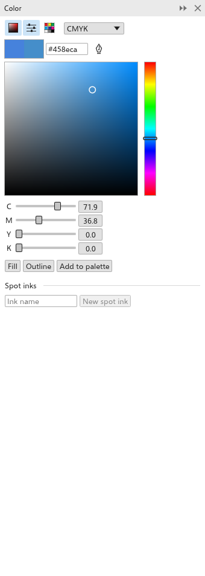

El panel Color
El panel Color (Shift+F11) mezcla un color y lo aplica al relleno o al contorno de la selección. La herramienta Color del contorno (Shift+F12) también lo abre. Ábralo desde Ventana > Paneles.

Elegir un color
- Seleccione objetos. El panel parte del color de relleno del primero.
- Mezcle el nuevo color en una de las vistas:
- Visores de color: haga clic o arrastre en el cuadrado para ajustar la saturación (de izquierda a derecha) y el brillo (de abajo arriba), y en la franja de al lado para ajustar el tono;
- Deslizadores de color: un deslizador por cada componente del Modelo: RGB, CMYK (opción predeterminada), HSB, HSL, Lab, Escala de grises o YIQ;
- Paletas de colores: las muestras de una paleta.
Los tres botones de arriba muestran u ocultan cada vista; puede mostrarse cualquier combinación. También puede escribir un valor #rrggbb.
- Haga clic en Relleno o Contorno, en la parte inferior del panel, para aplicar el nuevo color. El candado (Bloquear relleno y contorno) une relleno y contorno, de modo que cualquiera de los dos botones aplica el color a ambos. El botón "..." (Más acciones) despliega las demás acciones: Sin relleno, Sin contorno, Intercambiar colores, Añadir a la paleta del documento, Añadir a los colores directos personalizados y Añadir a la paleta de estilos de color.
El color anterior y el nuevo se muestran uno al lado del otro. Cuando el nuevo color no se puede imprimir con exactitud con tintas CMYK, el panel muestra un aviso.
Tomar una muestra de color
Haga clic en Cuentagotas y luego en cualquier punto del dibujo para tomar el color de ese lugar. Después haga clic en Usar muestra {c} para convertirlo en el nuevo color. Vea también Cuentagotas.
Tintas planas
Debajo de los botones, Tintas planas enumera las tintas planas del dibujo; vea Colores planos.